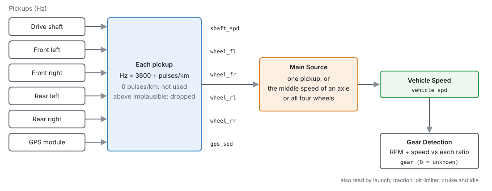
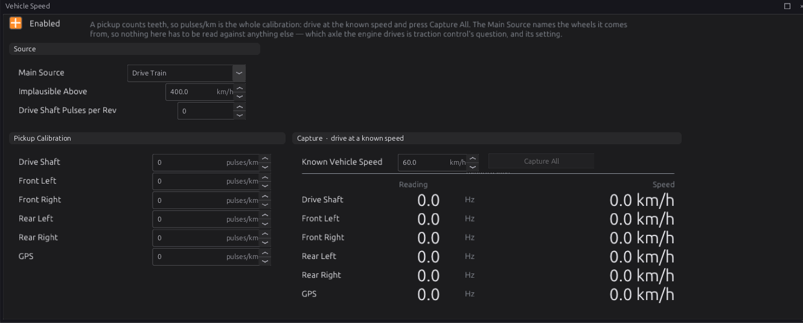
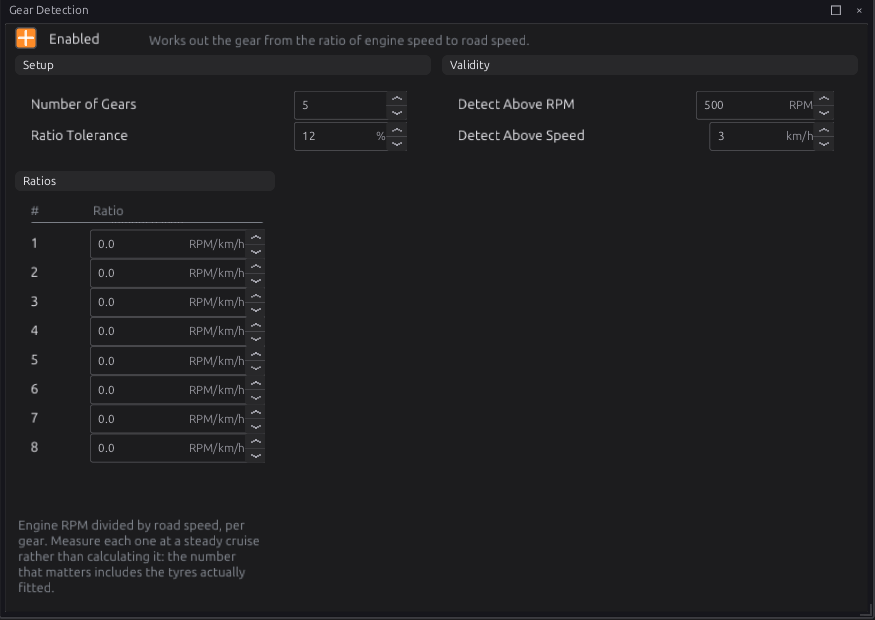
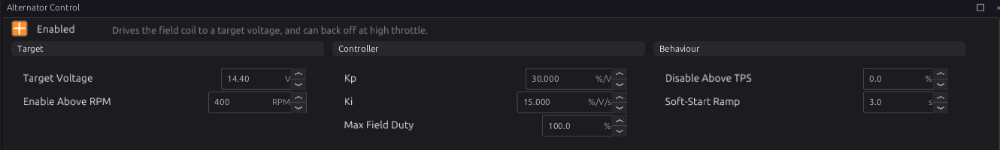
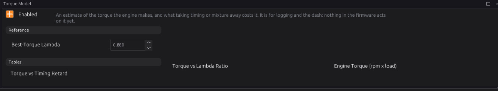
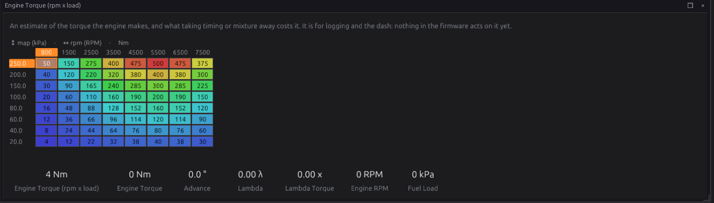

Vehicle functions¶
Basic → Intermediate
In one sentence: the ECU turns speed-sensor pulses into a road speed, works out the gear from engine speed and road speed, can regulate the alternator's charge voltage, and can estimate the torque the engine is making.
What it does¶
Basic
| Module | Page | Publishes |
|---|---|---|
Vehicle Speed (vehicle_speed) |
Configuration ▸ Vehicle Functions ▸ Vehicle Speed | Vehicle Speed vehicle_spd, and a speed for every pickup |
Gear Detection (gear_detect) |
Configuration ▸ Vehicle Functions ▸ Gear Detection | Gear gear (0 = unknown) |
Alternator Control (alternator) |
Configuration ▸ Electrical ▸ Alternator Control | Alternator Field Duty alternator_duty |
Torque Model (torque_model) |
Configuration ▸ Engine Functions ▸ Torque Model | Engine Torque engine_torque_nm, Engine Power engine_power_kw |
Road speed is used by launch and traction control (chapter 26), the pit limiter and cruise control (chapter 27) and idle (chapter 21). Gear is a table axis for fuel, ignition, boost and launch, and is used by boost and cruise.
All four are off by default. Vehicle Speed and Gear Detection publish nothing while they are off, so a speed or gear that comes from CAN (chapter 33) or a Lua script (chapter 35) is left alone.

How it works¶
Intermediate
1 · Road speed¶
A speed sensor counts teeth, so what it gives the ECU is a frequency. There are six pickups, each a sensor you set up in chapter 17: Wheel Speed Front Left, Front Right, Rear Left, Rear Right, Drive Shaft Speed and GPS Speed (a GPS speedometer module with a pulse output).
- Each pickup has one calibration number, pulses per kilometre. Its speed is Hz × 3600 ÷ pulses/km.
- A pickup with 0 pulses/km, or with no reading, has no speed. It is left out; it is not counted as 0 km/h.
- A reading above Implausible Above (400 km/h) is dropped. A floating frequency input can read enormous numbers.
- Every calibrated pickup publishes its own speed:
wheel_fl,wheel_fr,wheel_rl,wheel_rr,shaft_spd,gps_spd.
Main Source chooses which of them is the road speed vehicle_spd:
| Main Source | Road speed is |
|---|---|
| Drive Train, Front Left … Rear Right, GPS | that one pickup |
| Front Axle, Rear Axle | the average of that axle's two wheels (one wheel, if only one reads) |
| All Wheels | the average of the middle two of the four wheels — the fastest and slowest are ignored |
Taking the middle values ignores a wheel spinning under power and a wheel locking under braking at the same time. A drive shaft pickup reads the average of the driven wheels, so it includes their wheelspin. For traction control, the road speed has to come from wheels the engine does not drive (chapter 26).
Drive Shaft Pulses per Rev is only for the Drive Shaft RPM channel driveshaft_rpm; road speed
does not use it. 0 leaves that channel unpublished.
2 · Gear¶
Gear Detection divides engine RPM by road speed and compares it with each gear's Ratio (RPM per km/h). The closest ratio within Ratio Tolerance (12 %) wins. Nothing within tolerance gives 0.
- Below Detect Above RPM (500) or Detect Above Speed (3 km/h) the gear is 0 (unknown).
- With the clutch in or in neutral, the ratio usually matches no gear and the gear is 0.
- Only the first Number of Gears (5) ratios are tried. A ratio of 0 is an unused gear.
- The ratios are all 0 by default, so the gear is always 0 until you fill them in.
3 · Alternator¶
For an alternator whose field you can drive yourself (no internal regulator, or one bypassed), the ECU regulates the charge voltage:
- A PI loop compares the battery voltage with Target Voltage (14.40 V) and sets the field duty
alternator_duty, up to Max Field Duty (100 %). - It only runs while the engine is running (not cranking) and above Enable Above RPM (400).
- When it starts, the duty ceiling ramps up from 0 over Soft-Start Ramp (3 s), so the load comes on gently.
- Above Disable Above TPS it stops charging, freeing a little power (0, the default = never).
- More than 1.5 V above target, the field is switched off at once.
- With no battery reading, the field is released.
While it is not charging it publishes nothing, so the output falls back to its Failsafe value
(chapter 18). The module drives no pin by itself: give a PWM output the Value From candidate
alternator_duty.
4 · Torque model¶
An estimate: nothing is measured, and nothing in the firmware acts on it yet. It is for logging and the dash.
- Engine Torque (rpm x load) gives the torque at best timing and best-torque mixture, by RPM and manifold pressure.
- Torque vs Timing Retard takes some away when the timing is below the main advance map (knock, protection or idle retard).
- Torque vs Lambda Ratio takes some away when the mixture is away from Best-Torque Lambda (λ 0.880). Its axis is the ratio of the actual lambda to best-torque lambda.
- Power is torque × engine speed:
engine_power_kw.
The default torque map is a placeholder (a typical 2-litre engine, scaled with manifold pressure). Replace it with your engine's dyno figures.
Before you start¶
Basic
- Speed sensors wired to DIG inputs, or VR inputs (chapter 11), and set up as the pickup sensors above (chapter 17). Or a road speed arriving over CAN (chapter 33).
- Alternator: an alternator with an externally driven field, and a PWM output that can carry the field current (chapter 12).
- Torque model: your engine's torque curve.
Setting it up¶
Intermediate
Road speed¶
- On Vehicle Speed, tick Enabled and pick the Main Source.
- Calibrate each pickup, one of two ways:
- Drive: hold a steady speed, read from a GPS (not the car's speedometer), type it into Known Vehicle Speed and press Capture All. Every pickup's pulses/km is set from its reading.
- Work it out: pulses/km = teeth per wheel turn × 1000 ÷ tyre circumference in metres. For a drive shaft pickup, multiply by the final drive ratio as well.
- Check each pickup's Speed column against the GPS at a few speeds.

Capture All sets every pickup at once. A pickup that reads nothing at the time gets 0 (not used).
Gear¶
- On Gear Detection, tick Enabled and set Number of Gears.
- For each gear, drive at a steady speed in that gear and divide engine RPM by road speed (both on the dash). Type it as that gear's Ratio.
- Watch
gearwhile driving through the gears.

You can also work a ratio out: RPM per km/h = gear ratio × final drive × 1000 ÷ (60 × tyre circumference in metres). Measuring is better: it includes the tyres actually fitted.
Alternator¶
- Give a PWM output the Value From candidate
alternator_duty, with a Failsafe suited to your alternator (chapter 18). - On Alternator Control, tick Enabled and set Target Voltage.
- Start the engine and watch
batteryandalternator_dutywhile switching loads on and off (headlights, fan).

Torque model¶
- On Torque Model, tick Enabled and set Best-Torque Lambda.
- Enter your engine's torque in Engine Torque (rpm x load): the dyno curve at full load, and less at lower manifold pressures.


Worked examples¶
Intermediate
Example 1 — a rear-drive car with a gearbox speed sensor
Main Source Drive Train. Captured at 60 km/h by GPS: the sensor read 139 Hz, so pulses/km = 139 × 3600 ÷ 60 = 8340.
Example 2 — front-wheel drive with four ABS sensors
Main Source Rear Axle (the undriven wheels), so wheelspin does not show in the road speed. 48-tooth rings and 1.94 m tyres: 48 × 1000 ÷ 1.94 = 24742 pulses/km for each wheel.
Example 3 — gear ratios for a five-speed
In 1st at a steady 30 km/h the engine turns 3450 RPM: 3450 ÷ 30 = 115.0. The others, measured the same way: 2nd 63.5, 3rd 45.8, 4th 34.2, 5th 27.9.
Tuning it¶
Intermediate
- Wrong gear shown: a ratio typed wrongly, or measured with the clutch slipping. Measure it again at a steady speed. When a reading is within tolerance of two gears, the closer one wins.
- Gear drops to 0 while driving: tolerance too tight for tyre wear or torque-converter slip. Raise it a little.
- Alternator voltage rings: lower Kp. Settles below target: raise Ki.
Diagnostics¶
Intermediate
These modules set no trouble codes. The speed sensors have their own sensor codes (chapter 17).
Live channels: vehicle_spd, wheel_fl, wheel_fr, wheel_rl, wheel_rr, shaft_spd, gps_spd,
driveshaft_rpm, the raw frequencies wheel_hz_fl … gps_hz, gear, alternator_duty,
engine_torque_nm, engine_power_kw, lambda_torque_ratio.
Troubleshooting¶
Basic → Intermediate
| Symptom | Likely causes | Check |
|---|---|---|
| No road speed | Module off; pickup not calibrated (0 pulses/km); sensor not set up or not reading | Enabled; the pulses/km; the pickup's Hz on the page |
| Road speed wrong by a fixed factor | Calibration wrong | Capture again against a GPS |
| Road speed jumps to nothing at high speed | Above Implausible Above | Raise it, or look for a noisy input |
| Road speed rises with wheelspin | Main Source is a driven wheel or the drive shaft | Use the undriven axle |
| Gear always 0 | Ratios not set; below Detect Above RPM or Speed; no road speed | The Ratios; vehicle_spd |
| Alternator never charges | Engine not reported running; below Enable Above RPM; no output with alternator_duty |
engine_state; the output |
| Torque reads 0 | Module off | Enabled |
Settings reference¶
Vehicle Speed:
| Setting | What it does |
|---|---|
Vehicle Speed Enabledvehicle_speed.enabledRange: Off or On Default: Off |
Publish a road speed from the wheel or driveshaft pickups. Off, the module publishes NOTHING rather than zero, so a speed arriving over CAN or set by Lua is left alone — a disabled producer must not stomp another source. |
Main Sourcevehicle_speed.main_sourceRange: one of: Drive Train, Front Left, Front Right, Rear Left, Rear Right, GPS, Front Axle, Rear Axle, All Wheels Default: Drive Train |
Which sensors the road speed comes from — that is the only question here, because how they combine is not a matter of taste. A set takes the MIDDLE value of whichever of its wheels are calibrated and reading, which rejects a wheel spinning under power and one locking under braking at the same time. A drive train sensor reads the average of the driven wheels through the diff, so it inherits their wheelspin. A GPS speedometer module is a pulse train like any other pickup, calibrated in pulses/km the same way — and on a four-wheel-drive car it is the only road speed in the system that the engine does not turn. |
Calibration Speedvehicle_speed.calibration_speedRange: 0.0 to 400.0 Default: 60.0 Units: km/h |
The speed to hold while calibrating. Drive at exactly this — by a GPS, not by the car's own speedometer, which is the thing being calibrated — and Calibrate divides the live pulse rate by it to get pulses/km. |
Drive Shaft Pulses per Revvehicle_speed.shaft_pprRange: 0 to 60 Default: 0 |
Pulses the drive shaft pickup produces per SHAFT revolution — teeth on the tone ring, or magnets on the yoke. Only needed to report shaft RPM; road speed uses the pulses/km calibration below and does not care. 0 leaves the RPM channel unpublished. |
Implausible Abovevehicle_speed.max_kphRange: 0.0 to 600.0 Default: 400.0 Units: km/h |
A reading above this is treated as noise and dropped rather than published. A frequency input with a floating wire reads megahertz, and a road speed of nine thousand is worse than no road speed for anything acting on it. |
Gear Detection:
| Setting | What it does |
|---|---|
Gear Detection Enabledgear_detect.enabledRange: Off or On Default: Off |
Work out the gear from the RPM-to-road-speed ratio and publish gear. Off, the module publishes NOTHING rather than zero, so a gear set by Lua or arriving over CAN is left alone — a disabled detector must not stomp on another source. |
Number of Gearsgear_detect.gear_countRange: 1 to 8 Default: 5 |
How many forward ratios to test. Only this many of the ratio entries are considered, so a shorter gearbox does not accidentally match a leftover ratio from a longer one still sitting in the table. |
Ratio Tolerancegear_detect.tol_pctRange: 1 to 50 Default: 12 Units: % |
A gear matches when the measured ratio is within this % of its configured ratio. |
Detect Above RPMgear_detect.min_rpmRange: 0 to 12000 Default: 500 Units: RPM |
Below this RPM the ratio is not believed and the gear reports unknown (0). RPM divided by road speed is meaningless when the clutch is slipping or the car is coasting to a stop, and a wrong gear is worse than no gear for anything downstream that acts on it. |
Detect Above Speedgear_detect.min_vssRange: 0 to 255 Default: 3 Units: km/h |
Below this speed gear is reported as 0 (unknown/neutral). |
Alternator Control:
| Setting | What it does |
|---|---|
Alternator Control Enabledalternator.enabledRange: Off or On Default: Off |
Regulate the alternator field directly instead of leaving it to the alternator's internal regulator, so charge voltage becomes a tunable. Requires an alternator whose field is externally accessible; on a self-regulating unit this has nothing to act on. |
Target Voltagealternator.target_voltageRange: 10.00 to 16.00 Default: 14.40 Units: V |
The battery voltage being regulated to. The controller trims the field to hold it, so this is the single number that decides charge rate — too low undercharges, too high boils the battery and shortens the life of everything else on the rail. |
Enable Above RPMalternator.min_rpmRange: 0 to 3000 Default: 400 Units: RPM |
Do not drive the field below this RPM, and only once the engine is RUNNING rather than merely turning. At cranking speed the alternator cannot make its target anyway, and loading the field there just makes the engine harder to start. |
Kpalternator.kpRange: 0.000 to 60.000 Default: 30.000 Units: %/V |
Proportional gain: field duty per volt of error, applied immediately. It sets the response to a load stepping on. Too high and the voltage rings as the controller chases each change. |
Kialternator.kiRange: 0.000 to 60.000 Default: 15.000 Units: %/V/s |
Integral gain: field duty per volt of error per second. It is what removes a standing offset, so the rail settles on target rather than near it. The integrator is reset whenever charging disengages, so re-engaging always starts clean instead of slamming in a wound-up duty. |
Max Field Dutyalternator.max_duty_pctRange: 0.0 to 100.0 Default: 100.0 Units: % |
Ceiling on field duty. It is also what the soft-start ramps UP TO after engaging, so the field is never applied as a step — this is the protection against a full-field slam into a cold alternator or a weak belt. |
Disable Above TPSalternator.off_above_tpsRange: 0.0 to 100.0 Default: 0.0 Units: % |
Back off charging above this throttle (0 = always on). Frees a little power at WOT. |
Soft-Start Rampalternator.soft_start_sRange: 0.0 to 25.0 Default: 3.0 Units: s |
After engaging, ramp the field-duty ceiling from 0 to max over this time so the load comes on gently (0 = instant). |
Torque Model:
| Setting | What it does |
|---|---|
Torque Model Enabledtorque_model.enabledRange: Off or On Default: Off |
Estimate engine brake torque from a calibrated map and publish it, with power following as torque times angular velocity. It is an ESTIMATE for logging and for anything downstream that wants to think in torque; nothing is measured. Disabled, it publishes zeros rather than nothing. |
Best-Torque Lambdatorque_model.best_torque_lambdaRange: 0.700 to 1.050 Default: 0.880 |
The lambda at which this engine makes its best torque — richer than stoichiometric on a petrol engine, typically around 0.88. It is the reference the lambda-ratio trim is measured against, so the trim's axis is "how far from best-torque mixture" rather than an absolute lambda, and the map stays valid across fuels. |
Torque vs Timing Retard X Channeltorque_model.torque_spark_trim_x_srcRange: -1 to 32767 Default: 498 |
WHICH SIGNAL the X axis of 'Torque vs Timing Retard' is looked up on. The axis holds the breakpoints; this says what is compared against them, so changing it re-points the table at a different quantity without moving a single cell — and the breakpoints, chosen for the old signal's range and units, will almost certainly need redrawing. |
Torque vs Timing Retard Y Channeltorque_model.torque_spark_trim_y_srcRange: -1 to 32767 Default: 301 |
WHICH SIGNAL the Y axis of 'Torque vs Timing Retard' is looked up on. The axis holds the breakpoints; this says what is compared against them, so changing it re-points the table at a different quantity without moving a single cell — and the breakpoints, chosen for the old signal's range and units, will almost certainly need redrawing. |
Torque vs Timing Retard Y Axis Enabledtorque_model.torque_spark_trim_y_enRange: Off or On Default: Off |
Use the Y axis of 'Torque vs Timing Retard' as a real dimension. Off, the table collapses to a curve on its remaining axes and this one is ignored entirely — the right default for most optional axes, since a dimension nobody calibrates is a set of duplicate rows that still has to be kept in step. |
Torque vs Lambda Ratio X Channeltorque_model.torque_lambda_trim_x_srcRange: -1 to 32767 Default: 46 |
WHICH SIGNAL the X axis of 'Torque vs Lambda Ratio' is looked up on. The axis holds the breakpoints; this says what is compared against them, so changing it re-points the table at a different quantity without moving a single cell — and the breakpoints, chosen for the old signal's range and units, will almost certainly need redrawing. |
Torque vs Lambda Ratio Y Channeltorque_model.torque_lambda_trim_y_srcRange: -1 to 32767 Default: 46 |
WHICH SIGNAL the Y axis of 'Torque vs Lambda Ratio' is looked up on. The axis holds the breakpoints; this says what is compared against them, so changing it re-points the table at a different quantity without moving a single cell — and the breakpoints, chosen for the old signal's range and units, will almost certainly need redrawing. |
Torque vs Lambda Ratio Y Axis Enabledtorque_model.torque_lambda_trim_y_enRange: Off or On Default: Off |
Use the Y axis of 'Torque vs Lambda Ratio' as a real dimension. Off, the table collapses to a curve on its remaining axes and this one is ignored entirely — the right default for most optional axes, since a dimension nobody calibrates is a set of duplicate rows that still has to be kept in step. |
Engine Torque (rpm x load) X Channeltorque_model.torque_table_x_srcRange: -1 to 32767 Default: 319 |
WHICH SIGNAL the X axis of 'Engine Torque (rpm x load)' is looked up on. The axis holds the breakpoints; this says what is compared against them, so changing it re-points the table at a different quantity without moving a single cell — and the breakpoints, chosen for the old signal's range and units, will almost certainly need redrawing. |
Engine Torque (rpm x load) Y Channeltorque_model.torque_table_y_srcRange: -1 to 32767 Default: 273 |
WHICH SIGNAL the Y axis of 'Engine Torque (rpm x load)' is looked up on. The axis holds the breakpoints; this says what is compared against them, so changing it re-points the table at a different quantity without moving a single cell — and the breakpoints, chosen for the old signal's range and units, will almost certainly need redrawing. |
Timing Retard Axis binstorque_model.torque_spark_axis_nRange: 2 to 8 Default: 8 |
How many breakpoints of 'Timing Retard Axis' are LIVE, out of 8 allocated. Shrinking the axis does not delete the values past the end — they stay in the tune and reappear if it is grown again. Every table sharing this axis is resized with it. Fewer, well-placed breakpoints beat many evenly-spaced ones: resolution is only worth spending where the surface actually bends. |
Torque Spark Y (reserved) binstorque_model.torque_spark_yaxis_nRange: 1 to 1 Default: 1 |
How many breakpoints of 'Torque Spark Y (reserved)' are LIVE, out of 1 allocated. Shrinking the axis does not delete the values past the end — they stay in the tune and reappear if it is grown again. Every table sharing this axis is resized with it. Fewer, well-placed breakpoints beat many evenly-spaced ones: resolution is only worth spending where the surface actually bends. |
Lambda Ratio Axis (lambda/best-torque) binstorque_model.torque_lambda_axis_nRange: 2 to 8 Default: 8 |
How many breakpoints of 'Lambda Ratio Axis (lambda/best-torque)' are LIVE, out of 8 allocated. Shrinking the axis does not delete the values past the end — they stay in the tune and reappear if it is grown again. Every table sharing this axis is resized with it. Fewer, well-placed breakpoints beat many evenly-spaced ones: resolution is only worth spending where the surface actually bends. |
Torque Lambda Y (reserved) binstorque_model.torque_lambda_yaxis_nRange: 1 to 1 Default: 1 |
How many breakpoints of 'Torque Lambda Y (reserved)' are LIVE, out of 1 allocated. Shrinking the axis does not delete the values past the end — they stay in the tune and reappear if it is grown again. Every table sharing this axis is resized with it. Fewer, well-placed breakpoints beat many evenly-spaced ones: resolution is only worth spending where the surface actually bends. |
Torque RPM Axis binstorque_model.torque_rpm_axis_nRange: 2 to 16 Default: 8 |
How many breakpoints of 'Torque RPM Axis' are LIVE, out of 16 allocated. Shrinking the axis does not delete the values past the end — they stay in the tune and reappear if it is grown again. Every table sharing this axis is resized with it. Fewer, well-placed breakpoints beat many evenly-spaced ones: resolution is only worth spending where the surface actually bends. |
Torque Load Axis (MAP) binstorque_model.torque_load_axis_nRange: 2 to 8 Default: 8 |
How many breakpoints of 'Torque Load Axis (MAP)' are LIVE, out of 8 allocated. Shrinking the axis does not delete the values past the end — they stay in the tune and reappear if it is grown again. Every table sharing this axis is resized with it. Fewer, well-placed breakpoints beat many evenly-spaced ones: resolution is only worth spending where the surface actually bends. |
Torque vs Timing Retardtorque_model.torque_spark_trimRange: 0 to 100 Default: 8-point curve Units: % |
How much of the reference torque survives at a given timing retard from optimum. Pulling timing costs torque, steeply at first; this curve is what lets the estimate follow knock retard, protection retard and idle timing rather than assuming the engine is always at its best timing. |
Timing Retard Axistorque_model.torque_spark_axisRange: 0 to 0 Default: 8-point curve Units: deg |
Retard-from-optimum breakpoints, in degrees, for the spark trim curve. 0 is best timing; the curve should read 100% there by definition. |
Torque Spark Y (reserved)torque_model.torque_spark_yaxisRange: 0 to 0 Default: 1-point curve |
Reserved — the spark trim is a one-dimensional curve and this second axis is not used. Left in place so the table can gain a second dimension without moving in the layout. |
Torque vs Lambda Ratiotorque_model.torque_lambda_trimRange: 0 to 100 Default: 8-point curve Units: % |
How much of the reference torque survives at a given distance from best-torque lambda. Both leaner and richer than best-torque cost torque, so this curve normally peaks in the middle at 100%. |
Lambda Ratio Axis (lambda/best-torque)torque_model.torque_lambda_axisRange: 0 to 0 Default: 8-point curve Units: x |
Breakpoints for the lambda trim, expressed as a RATIO of actual lambda to best-torque lambda. A ratio rather than an absolute lambda so the curve does not have to be redrawn when the fuel changes; 1.0 is best-torque and should read 100%. |
Torque Lambda Y (reserved)torque_model.torque_lambda_yaxisRange: 0 to 0 Default: 1-point curve |
Reserved — the lambda trim is a one-dimensional curve and this second axis is not used. |
Engine Torque (rpm x load)torque_model.torque_tableRange: 0 to 1500 Default: 8 × 8 table Units: Nm |
Reference brake torque at each RPM and load, with the engine at best timing and best-torque lambda. Everything else in this module trims DOWN from here, so this map defines the engine's ceiling — it comes from a dyno sheet or a published curve, not from a guess. |
Torque RPM Axistorque_model.torque_rpm_axisRange: 0 to 0 Default: 8-point curve Units: RPM |
RPM breakpoints for the torque map. Worth concentrating around the torque peak, where the curve has the most shape to capture. |
Torque Load Axis (MAP)torque_model.torque_load_axisRange: 0 to 0 Default: 8-point curve Units: kPa |
Load (MAP) breakpoints for the torque map. Torque tracks manifold pressure closely, so this is the axis that carries most of the map's range. |
Related¶
- Chapter 11 — Wiring sensors (speed sensors)
- Chapter 17 — Sensors and calibration (the pickup sensors)
- Chapter 18 — Outputs and the pin system (the alternator output)
- Chapter 26 — Launch, shift and traction
- Chapter 27 — Speed limiting